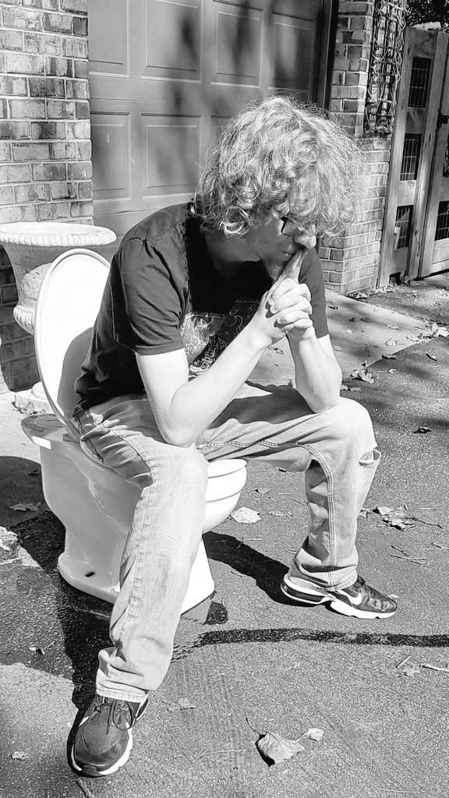

APRIL 26TH
7PM _ DEPOT ANNEX
PRODUTION STUDIO
Get ready to experience a disruptive and kinetic real-time multimedia performance, as University students from VCU Arts in Richmond, Virginia present SUM DIMENSION. This hour and a half performance, created by the collective minds of Professor HOLLOWAY's Glitch-As-Method class, will have you recalculating your expectations of art making. Using the frameworks of glitch and feminist theory, this round-robin performance explores the function of distortion and chaos, all while showcasing a decayed and modified plethora of electronics. Don't miss your chance to witness this abstract and thought-provoking display of artistic expression; peeling back the layers you get, like, a Slinky and then it's elongated so the surface area is more cus you've extended it but they don't really know what you do with after that. Come find out.
Meet the Glitch Gremlins

Cassie Melson
Cassie is a genderfluid artist with a love for the macabre. They work in many mediums, from animations to clay sculpture.
The Things We Hold Deer is a paper-mache deer head mounted atop a cardboard box. The audience is encouraged to whisper secrets into its ear-tubes, just to the deer or to a companion on the other side. On the paper provided, the audience is encouraged to write secrets and "feed" the deer, putting their hand in its maw and dropping the paper down it's throat, where it will be destroyed in a bowl of water laying below. The piece speaks on the artist's OCD and how they deal with their worst and most troubling intrusive thoughts.

Kennedy Patterson
Kennedy Patterson is a non-binary multimedia artist with a specialization in interactive media. They are a nerd of many disciplines and enjoy a good story above all else.R3QU13M 4 S1CKL3 C3LL is a video and live performance piece discussing the impacts of Sickle Cell Anemia and the ways in which a small change in DNA can have massive implications for a persons health. The artist will be playing a music performance in which the notes played correspond with the base pairs on the HBB gene responsible for Sickle Cell while discussing with the audience their own history with genetic blood disorders.

Marie Anderson
Marie Anderson an experimental animator, illustrator, and sound artist who portrays fantasies and variations of disruption, monstrosity, and memory. In their practice, they wield the obtuse, electronic intensity of horror aesthetics coupled with a quiet romance with the mundane to approach themes of gender, the body as landscape, and introspective apocalyptic doom.Nativity, in collaboration with Henry Mills, is an interactive multi-media installation that invites audiences into a murky landscape of indecipherable codes of conduct enforced by terror and ambiguity. Links between sculptural and digital fabrications are orchestrated by code, creative electronics, and human touch. Audiences are challenged to meet the piece with unconditional care and empathy for the innocent and unwittingly grotesque, or else succumb to complacency and discomfort.

Elliot Kim
Elliot Kim is a nonbinary video artist with a passion for raw, vulnerable and subversive abstract narratives. They utilize carefully crafted scripts and bold visuals to tell their truths on trauma, identity, and truth.AI, Locate My Lost Files is a video piece documenting a conversation between the artist and an AI made from their personality and memory. Kim and their Ai, 3LL1OT, discuss the effect trauma and depression has on memory, and they delve into Kim’s memories, ranging from early childhood to adolescence. These memories include the every day, the day Kim came out to their family, and impactful moments as a child.AI, Locate My Lost Files is a video piece documenting a conversation between the artist and an AI made from their personality and memory. Kim and their Ai, 3LL1OT, discuss the effect trauma and depression has on memory, and they delve into Kim’s memories, ranging from early childhood to adolescence. These memories include the every day, the day Kim came out to their family, and impactful moments as a child.

Bijan Hosseini
Bijan Hosseini is a multimedia artist, music producer, and Dj based in the DMV area. He continues to carve his own lane as a producer, raising the bar with his masterful songwriting, sound design and engineering.“(TITLE TBA)” is an interactive audio-visual piece created using Max/MSP code. The interactive piece takes users through a sonic and visual experience allowing for motion to translate into glitch.

Alyssa Scinta
Alyssa Scinta (she/they) is a multimedia artist from the east coast, with a passion for a good pink/blue contrast and a fisheye lens. They specialize in video arts, graphic art, projection, and new media in relation to music and abstraction, live viewings and single channel.DO NOT RESUSCITATE is a screen dance performance tribute to the text, ‘DO NOT RESUSCITATE.’ Written by Alyssa Scinta for the Kinetic Imaging Glitch as Method course, this piece brings the concept of deleted or corrupted technological art to life. With the program of the piece designing to override, it is impossible for the artist to recreate a duplicate frame again. The first component of the piece is the artist herself. Scinta uses the shape and color of her facial features as the paintbrush. The next includes the canvas, which is compiled of an image instancing sequence programmed in Touch Designer. This interface causes the shape of her features mold an abstract image that is constantly evolving through immediate time.

David Mallory
David Mallory (he/him) is a multimedia artist, sound designer, music producer, animator from Virginia. His strive for creating new experiences and sounds captured in music/film is unparalleled.ITLE is an audio visual sound piece using Ableton. This piece is about nothing. No message, no deeper meaning, just a visceral experience that will entrance the viewer. We spend too much time trying to conceive art that has some higher purpose than ourselves, instead of creating something just for the sake of creating. This piece will be a concave of moving particles and images synced to Ableton Live.

Aniza Douangdara
Aniza Douangdara (she/they) is an animator and sound artist who‘s interested in the exploration and experimentation of distorted perceptions. Their focus is on societal and personal expectations of the mind, body, and soul through an abstract lens of what reality is.
chloe p
chloe p (she/her) revels in the promise of inherent distortion. her multimedia work manipulates moments & memories, recreating the past as the present.scanned scanned friends scanned friends 360 scanned friends

Henry Mills
Henry Mills is an animator, video artist, and sound artist who likes to dump his emotional spaghetti all over the floor. He has a keen eye for composition and structure, but he has decided that structure is just a Trojan horse for the spaghetti.Nativity, in collaboration with Marie Anderson, is an interactive multi-media installation that invites audiences into a murky landscape of indecipherable codes of conduct enforced by terror and ambiguity. Links between sculptural and digital fabrications are orchestrated by code, creative electronics, and human touch. Audiences are challenged to meet the piece with unconditional care and empathy for the innocent and unwittingly grotesque, or else succumb to complacency and discomfort.

Tyreese Hence
Tyreese Hence is an animator and video artist who likes to explore old media and technology. He takes inspiration from old cartoons.Untitled is a harsh noise installation that uses sounds created from converting images and videos into audio.

Joe Crighton
Joe Crighton is an artist."Faces of Glitch" is an audio-visual piece created using Clip Studio Paint and Blender. Inspired by the roleplaying game, Disco Elysium, the piece personafies the various "voices in your head."